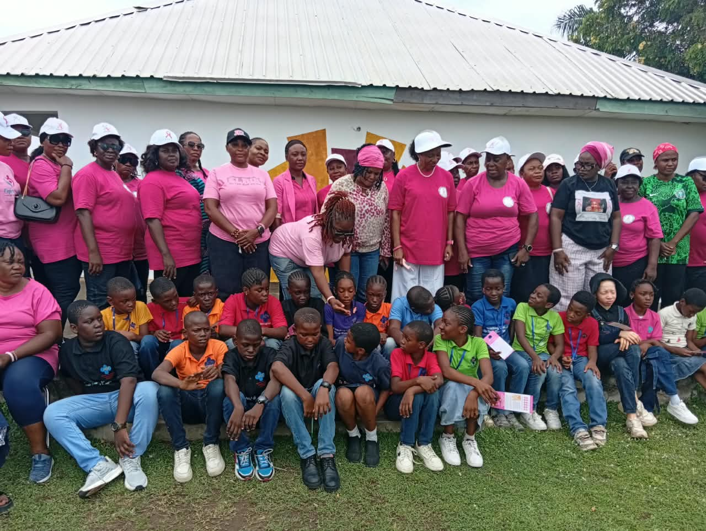
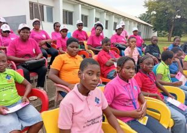
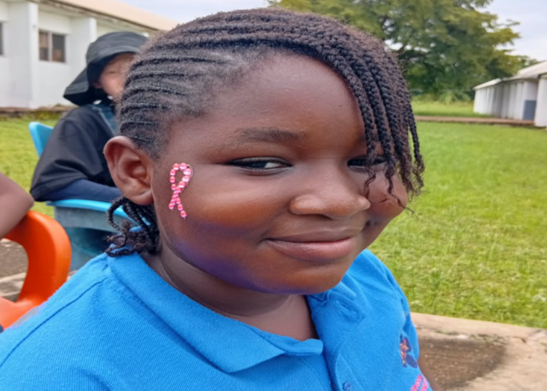

BBCSI Brings Breast Cancer Awareness and Hand Hygiene Education to Young Learners in Makurdi
Published: · Makurdi, Benue State · BBCSI Communications Team

The Benue Breast Cancer Support Initiative (BBCSI), led by its Convener, Prof. Stevina Evuleocha-Ugbah, has taken its health education campaign to young learners at Hearts and Minds Learning Centre, Makurdi, combining breast cancer awareness with practical handwashing demonstrations to commemorate World Handwashing Day 2026.
The outreach aimed to equip the children with essential health knowledge, promote healthy hygiene practices, and inspire them to become ambassadors of breast cancer awareness in their homes, schools, and communities.
Raising Young Advocates
During the breast cancer awareness session, Prof. Stevina Evuleocha-Ugbah emphasised the importance of educating children from an early age and empowering them to become advocates for breast cancer awareness.
She encouraged the learners to share the knowledge they acquired with their parents, family members, and friends, noting that increased awareness could promote early detection, encourage timely medical attention, and ultimately help save lives.
She further highlighted the importance of spreading accurate information about breast cancer and encouraging open conversations about the disease within families and communities.


World Handwashing Day 2026
As part of the outreach, Prof. Stevina Evuleocha-Ugbah, wife of the Federal Commissioner representing Benue State at the Revenue Mobilisation Allocation and Fiscal Commission (RMAFC), also commemorated World Handwashing Day 2026 by demonstrating proper handwashing techniques to the young learners.
She educated the children on the importance of washing their hands thoroughly with soap and clean water to remove germs, prevent the spread of infections, and maintain good personal hygiene.
The practical demonstration encouraged the learners to adopt regular handwashing as a healthy habit at school and at home. It also reinforced the importance of personal hygiene in protecting children from preventable diseases and promoting a healthier learning environment.
A Warm Welcome
Receiving the BBCSI delegation on behalf of Hearts and Minds Learning Centre, the Director, Mrs. Linda Ade Acka’a, who is also a breast cancer advocate, warmly welcomed the team and commended the initiative.
She encouraged BBCSI to sustain its awareness campaigns, noting that educating children and communities about breast cancer and proper hygiene practices could contribute significantly to saving lives and improving public health.
Looking Ahead
The outreach reflects BBCSI’s commitment to promoting health education among young people and expanding breast cancer awareness across Benue State. By reaching children and communities with practical, potentially life-saving information, the initiative seeks to encourage healthier behaviours and strengthen public understanding of breast cancer.
Through sustained advocacy, community engagement, and public health education, BBCSI aims to promote early detection, encourage healthy hygiene practices, and contribute to reducing the impact of breast cancer and preventable infections in society.
Breast cancer awareness begins with knowledge, while proper handwashing protects health. Together, education and healthy habits can help build healthier families and communities.